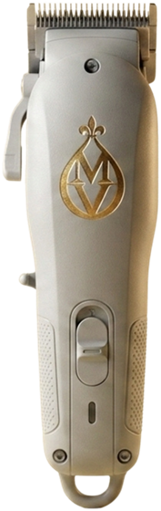
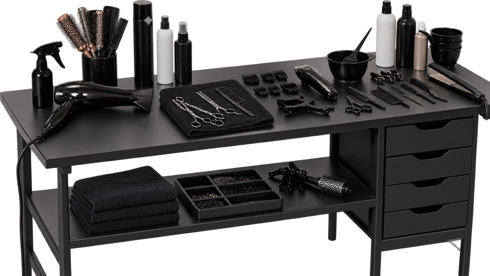

Trente minutes pour établir un état des lieux précis de vos cheveux et de votre cuir chevelu, à l'écran. Vous ne repartez pas avec des impressions, mais avec des images et un plan d'entretien réaliste.
Bilan capillaire — 30 min · 30 €, déductible de toute prestation réservée à la suite
Le bilan capillaire est facturé 30 €, intégralement déduits de la prestation que vous réservez à la suite. Vous ne payez pas pour être observé : vous payez votre coupe, votre soin ou votre couleur — et l'observation vient avec.
Réserver mon bilan capillaire
Le point de départ pour mieux comprendre l'état de vos cheveux et de votre cuir chevelu, puis suivre leur évolution dans le temps.
L'objectif : mieux comprendre vos cheveux pour leur apporter des soins plus adaptés.
Le bilan cosmétique cheveux & cuir chevelu permet de remplacer les suppositions par des observations concrètes.
Grâce à l'échange, à l'observation du cuir chevelu et de la fibre capillaire, notamment à l'aide du trichoscope, nous identifions leurs caractéristiques visibles et leurs besoins prioritaires afin de vous orienter vers une routine et des soins plus adaptés.
Il constitue également une étape particulièrement utile avant une coloration, une transformation durable, un changement important de routine ou la mise en place d'un protocole de soins du cuir chevelu.
Mieux comprendre vos cheveux, c'est déjà commencer à mieux en prendre soin.

Vos habitudes, vos produits, votre ressenti, votre objectif. Ce que vous avez déjà essayé, et ce qui n'a pas marché.
L'image de vos cheveux et de votre cuir chevelu est agrandie à l'écran. Vous voyez exactement ce que nous voyons.
Les observations sont organisées pour faire ressortir vos besoins cosmétiques prioritaires. On traite d'abord ce qui compte le plus.
Vous repartez avec des recommandations tenables : quels gestes, à quelle fréquence, avec quel type de produit.
Les observations du bilan orientent naturellement vers la prestation adaptée : un protocole soin cuir chevelu quand la zone demande une attention ciblée, une Coupe Prestige ou une Barbe Prestige quand l'observation doit précéder le geste, un soin profond sur mesure en complément. C'est vous qui décidez de la suite — nous vous donnons de quoi décider.
Le bilan capillaire est une prestation d'observation, de prévention cosmétique et de conseil. Aucun diagnostic médical n'est posé. Lorsqu'un signe observé nécessite un avis médical, nous vous recommandons de consulter un médecin ou un dermatologue. Cette limite fait partie du sérieux de la démarche.
